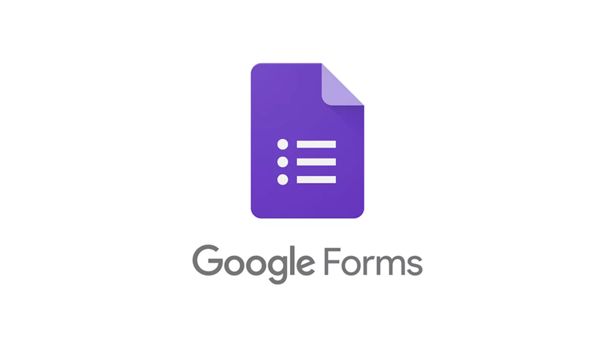

Google Forms
Fue creada para reemplazar muchos procesos manuales de recolección de datos, como encuestas impresas, registros en papel y cuestionarios físicos. Gracias a su funcionamiento en la nube, toda la información se guarda automáticamente y puede consultarse desde computadoras, tablets o teléfonos móviles.

Google Forms es ampliamente utilizado en instituciones educativas, empresas, organizaciones y por usuarios individuales debido a su facilidad de uso, accesibilidad y capacidad de organizar grandes cantidades de información.Además, permite automatizar procesos como calificación de exámenes, confirmación de asistencia, recopilación de datos estadísticos y seguimiento de respuestas en tiempo real.
¿Para qué sirve?
Google Forms sirve principalmente para recopilar información de usuarios de forma ordenada y eficiente. Sus usos principales incluyen:
- Elaboración de encuestas de opinión.
- Formularios de inscripción a cursos o eventos.
- Registros de asistencia.
- Creación de exámenes virtuales.
- Cuestionarios académicos.
- Formularios de contacto.
- Solicitudes de empleo.
- Evaluaciones de satisfacción al cliente.
- Recolección de datos para investigaciones.
- Registro de pedidos o solicitudes.
También es útil para docentes que necesitan evaluar estudiantes automáticamente y para empresas que desean obtener retroalimentación rápida de clientes o empleados.
Características
- Preguntas múltiples.
- Casillas.
- Respuesta corta.
- Subida de archivos.
- Validación automática.
- Gráficos estadísticos.
- Integración con hojas de cálculo.
.png)
Ventajas
- Gratuito.
- Fácil de usar.
- Ahorro de tiempo.
- Organización automática.
Desventajas
- Diseño limitado.
- Requiere internet.